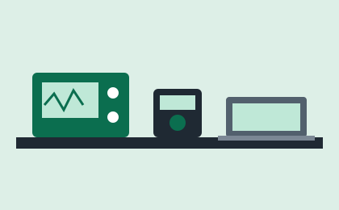

Estudiante
- Solicitar un préstamo.
- Ver sus préstamos activos y fechas de devolución.
SIGEL permite a los estudiantes solicitar osciloscopios, multímetros, kits y laptops en línea, y al laboratorista saber en todo momento quién tiene cada equipo y cuándo debe devolverlo.

La cantidad de equipos y los días son parámetros que el administrador puede cambiar. Vigentes desde el .